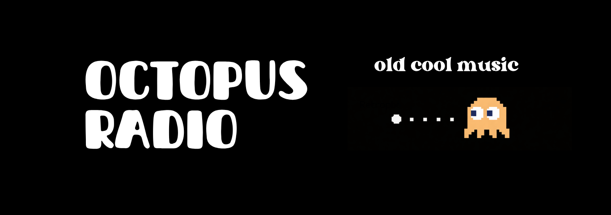
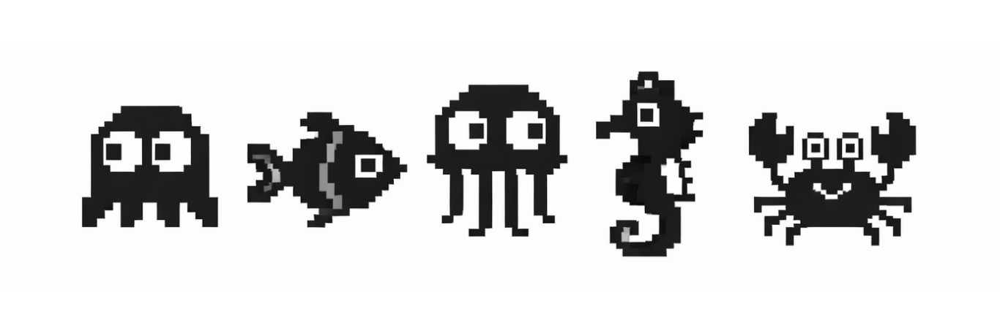

Octopus Radio: in onda ogni venerdi dalle ore 21.00

Octopus Radio is On Air now
Credits - Octopus Radio is a project designed and built by Fabrizio Andreis with Diego Di Lodovico's contribution to the music playlist
Credits - Octopus Radio è un progetto ideato e costruito da Fabrizio Andreis con il contributo di Diego Di Lodovico alla playlist musicale